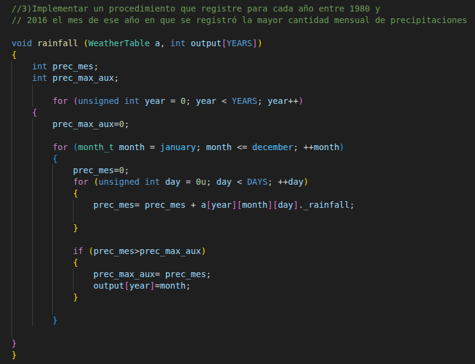

Sistema de gestión climática
Proyecto desarrollado en lenguaje C para gestionar registros climáticos mediante estructuras de datos y tipos abstractos de datos (TAD).
Ver proyecto en GitHubEn esta sección presento algunos de los proyectos que he desarrollado durante mi formación académica. Cada uno de ellos me permitió aplicar distintos conceptos de programación, estructuras de datos y análisis de datos, fortaleciendo mis habilidades técnicas.

Consulta de precipitaciones utilizando memoria dinámica y tipos abstractos de datos.

Análisis de datos mediante Python, Pandas, Matplotlib y Seaborn.
Proyecto desarrollado en lenguaje C para gestionar registros climáticos mediante estructuras de datos y tipos abstractos de datos (TAD).
Ver proyecto en GitHubProyecto de análisis de datos realizado en Python con Pandas, Matplotlib y Seaborn para estudiar la distribución de los salarios de programadores.
Ver proyecto en GitHub